<!DOCTYPE html>
<html lang="en">
<head>
  <meta charset="utf-8">
  <meta name="viewport" content="width=device-width, initial-scale=1.0">
  <title>119-144 - Class 9 Mathematics</title>
  <style>

:root {
  --bg-color: #fcfcfd;
  --card-bg: #ffffff;
  --text-color: #1e293b;
  --text-muted: #64748b;
  --primary-color: #0284c7;
  --primary-light: #e0f2fe;
  --border-color: #e2e8f0;
  --radius: 10px;
  --shadow: 0 4px 6px -1px rgb(0 0 0 / 0.05), 0 2px 4px -2px rgb(0 0 0 / 0.05);
}

body {
  font-family: -apple-system, BlinkMacSystemFont, "Segoe UI", Roboto, "Noto Sans Malayalam", "Manjari", "Gayathri", sans-serif;
  background-color: var(--bg-color);
  color: var(--text-color);
  line-height: 1.8;
  font-size: 1.1rem;
  margin: 0;
  padding: 0;
}

.container {
  max-width: 860px;
  margin: 0 auto;
  padding: 2.5rem 1.5rem 5rem 1.5rem;
}

header {
  margin-bottom: 2.5rem;
  padding-bottom: 1.5rem;
  border-bottom: 2px solid var(--border-color);
}

.badge-row {
  display: flex;
  gap: 0.5rem;
  margin-bottom: 0.75rem;
  flex-wrap: wrap;
}

.badge {
  display: inline-block;
  font-size: 0.75rem;
  font-weight: 700;
  text-transform: uppercase;
  letter-spacing: 0.05em;
  padding: 0.25rem 0.65rem;
  border-radius: 9999px;
  background: var(--primary-light);
  color: var(--primary-color);
}

.badge-medium {
  background: #fef3c7;
  color: #b45309;
}

.badge-class {
  background: #dcfce7;
  color: #15803d;
}

h1 {
  font-size: 2.1rem;
  font-weight: 800;
  margin: 0.5rem 0 1rem 0;
  line-height: 1.3;
  color: #0f172a;
}

.nav-bar {
  display: flex;
  justify-content: space-between;
  margin: 1.5rem 0;
  font-size: 0.95rem;
  flex-wrap: wrap;
  gap: 0.5rem;
}

.nav-bar a {
  color: var(--primary-color);
  text-decoration: none;
  font-weight: 600;
  padding: 0.5rem 1rem;
  border-radius: var(--radius);
  background: var(--card-bg);
  border: 1px solid var(--border-color);
  transition: all 0.2s ease;
}

.nav-bar a:hover {
  background: var(--primary-light);
  border-color: var(--primary-color);
}

.nav-bar .disabled {
  color: var(--text-muted);
  pointer-events: none;
  border-color: transparent;
  background: transparent;
}

.page-section {
  background: var(--card-bg);
  border: 1px solid var(--border-color);
  border-radius: var(--radius);
  box-shadow: var(--shadow);
  padding: 2rem;
  margin-bottom: 2.5rem;
}

.page-header {
  display: flex;
  align-items: center;
  justify-content: space-between;
  margin-bottom: 1.25rem;
  padding-bottom: 0.5rem;
  border-bottom: 1px dashed var(--border-color);
}

.page-number {
  font-size: 0.8rem;
  font-weight: 700;
  text-transform: uppercase;
  color: var(--text-muted);
  letter-spacing: 0.05em;
}

.page-content p {
  margin: 0 0 1.25rem 0;
  white-space: pre-wrap;
  word-break: break-word;
}

.page-content p:last-child {
  margin-bottom: 0;
}

.diagram-card {
  margin: 2rem 0;
  text-align: center;
  background: #f8fafc;
  border: 1px solid var(--border-color);
  border-radius: var(--radius);
  padding: 1rem;
  overflow: hidden;
}

.diagram-card img {
  max-width: 100%;
  height: auto;
  border-radius: calc(var(--radius) - 4px);
  display: inline-block;
  box-shadow: 0 2px 4px rgba(0,0,0,0.04);
}

.diagram-card figcaption {
  font-size: 0.85rem;
  color: var(--text-muted);
  margin-top: 0.75rem;
  font-weight: 500;
}

footer {
  margin-top: 3rem;
  padding-top: 2rem;
  border-top: 2px solid var(--border-color);
}

  </style>
</head>
<body>
  <div class="container">
    <header>
      <div class="badge-row">
        <span class="badge badge-class">Class 9</span>
        <span class="badge badge-medium">English Medium</span>
        <span class="badge">Mathematics</span>
        <span class="badge">Part 1</span>
      </div>
      <h1>119-144</h1>
      <div class="nav-bar"><a href="part_1_99_118.html">← 99-118</a><a href="index.html">☰ Index</a><span class="nav-bar disabled"></span></div>
    </header>
    <main>
      <section class="page-section" id="page-119">
  <div class="page-header"><span class="page-number">Page 119</span></div>
  <figure class="diagram-card" id="fig_ch07_p119_01"><figcaption>Figure fig_ch07_p119_01 (Page 119)</figcaption></figure>
  <figure class="diagram-card" id="fig_ch07_p119_02">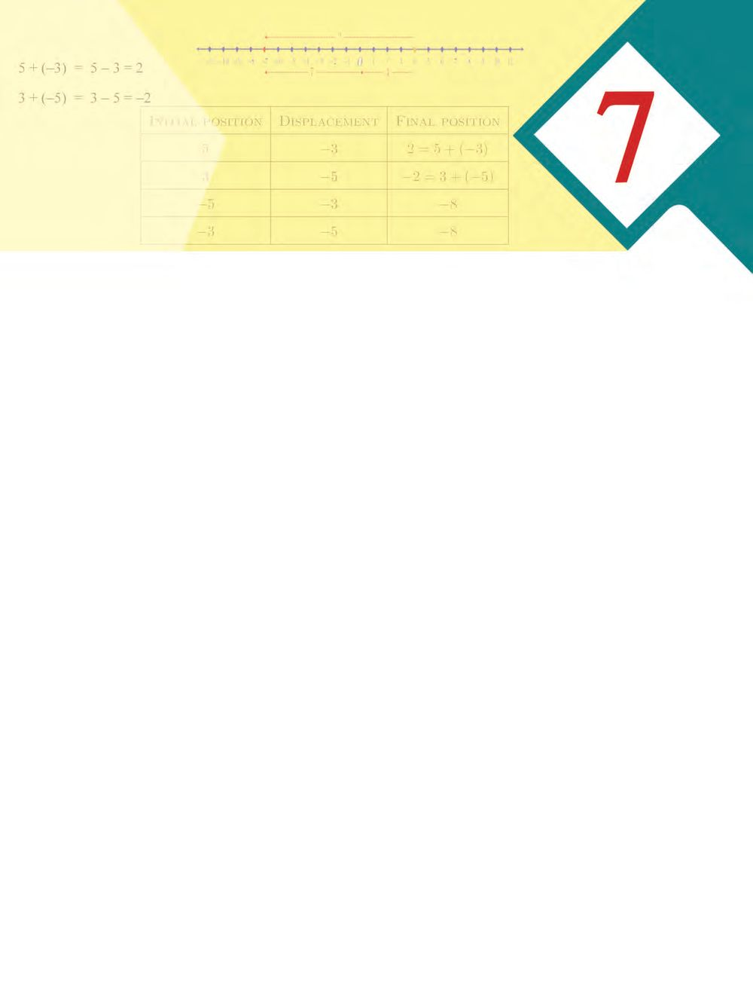<figcaption>Figure fig_ch07_p119_02 (Page 119)</figcaption></figure>
  <div class="page-content">
    <p>Negative Numbers</p>
    <p>NEGATIVE NUMBERS
Measures and numbers
We&#x27;ve seen in class 8, how we use negative numbers to denote temperatures below zero.
We set zero degree celsius, written 0°C, as the temperature at which water freezes to
solid ice. To denote temperatures colder than this, we have to use notations like −1°C,
−20.5°C.
We&#x27;ve also seen how negative numbers are used to denote points in some games and
as scores in some exams. We also noted some general results on calculations with such
numbers.
For example, look at this question:
If temperature dropped 7°C from 3°C, what would it be?
To answer this we introduced the operation
3  7 = 4
and through other examples like this, came up with the general law for subtracting a
small number from a larger number.
Through such examples of operations needed in different contexts, we formulated three
general laws about operations with negative numbers:
For any two positive numbers x, y
(i) If x &lt; y, then x − y = −(y − x)
(ii) −x + y = y − x
(iii) −x  y = −(x + y)
Using these ideas, can&#x27;t you do the following?
(i) 6  8</p>
    <p>(ii) 6 + 8</p>
    <p>(iii) 6  8</p>
    <p>(iv) 2 12  3 12</p>
    <p>(v)  2 12  3 12</p>
    <p>(vi)  2 12  3 12</p>
    <p>We next look at another context in which negative numbers are used.</p>
    <p>119</p>
  </div>
</section><section class="page-section" id="page-120">
  <div class="page-header"><span class="page-number">Page 120</span></div>
  <figure class="diagram-card" id="fig_ch07_p120_01"><figcaption>Figure fig_ch07_p120_01 (Page 120)</figcaption></figure>
  <figure class="diagram-card" id="fig_ch07_p120_02">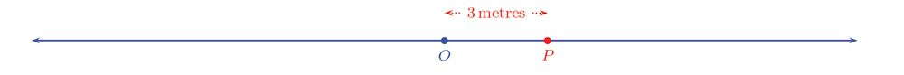<figcaption>Figure fig_ch07_p120_02 (Page 120)</figcaption></figure>
  <figure class="diagram-card" id="fig_ch07_p120_03">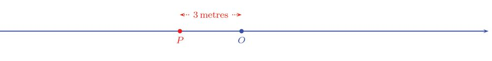<figcaption>Figure fig_ch07_p120_03 (Page 120)</figcaption></figure>
  <figure class="diagram-card" id="fig_ch07_p120_04">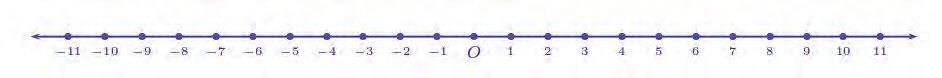<figcaption>Figure fig_ch07_p120_04 (Page 120)</figcaption></figure>
  <figure class="diagram-card" id="fig_ch07_p120_05">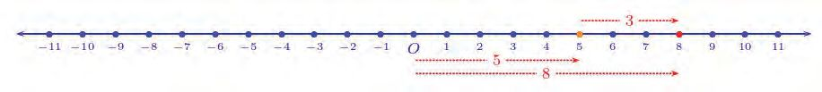<figcaption>Figure fig_ch07_p120_05 (Page 120)</figcaption></figure>
  <figure class="diagram-card" id="fig_ch07_p120_06">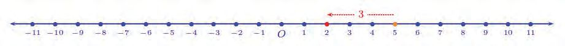<figcaption>Figure fig_ch07_p120_06 (Page 120)</figcaption></figure>
  <div class="page-content">
    <p>Standard - IX Mathematics</p>
    <p>Position and number
Imagine a point moving along a straight line. To indicate its position, we can specify its
distance (measured in some unit) from a fixed point:</p>
    <p>The picture shows the position of the moving point P at a distance of 3 metres to the
right of the fixed point O.
P can also be at 3 metres to the left of O.</p>
    <p>So to know the exact position of P, distance alone will not do; we&#x27;ll have to specify the
direction also.
One way to overcome this, is to specify distances to the left as negative numbers. Once
we have decided on a unit of length (such metre or centimetre), we can denote all
positions, except O, on the line using positive and negative numbers.</p>
    <p>The position of the fixed point O can be denoted by 0.
Now suppose that the moving point shifts from the position 5 to the position 8. We can
say that the displacement (change in position) is 8  5 = 3:</p>
    <p>On the other hand, if we say that the point shifts 3 places from 5, can we say that its
current position is 8 ?
It&#x27;s correct if the change in position is to the right; what if it is to the left ?</p>
    <p>So it&#x27;s not enough to know the amount of displacement, we should also know whether
it is to the right or left.</p>
    <p>120</p>
  </div>
</section><section class="page-section" id="page-121">
  <div class="page-header"><span class="page-number">Page 121</span></div>
  <figure class="diagram-card" id="fig_ch07_p121_01"><figcaption>Figure fig_ch07_p121_01 (Page 121)</figcaption></figure>
  <figure class="diagram-card" id="fig_ch07_p121_02">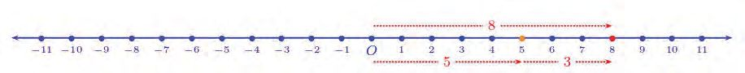<figcaption>Figure fig_ch07_p121_02 (Page 121)</figcaption></figure>
  <figure class="diagram-card" id="fig_ch07_p121_03">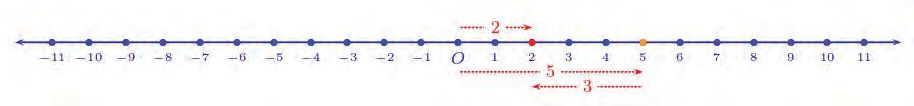<figcaption>Figure fig_ch07_p121_03 (Page 121)</figcaption></figure>
  <figure class="diagram-card" id="fig_ch07_p121_04">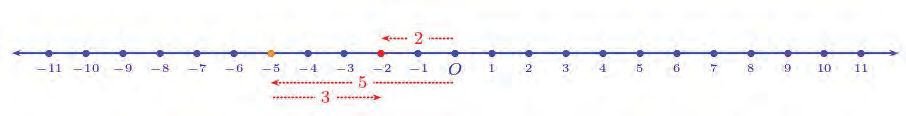<figcaption>Figure fig_ch07_p121_04 (Page 121)</figcaption></figure>
  <div class="page-content">
    <p>Negative Numbers</p>
    <p>That is, if the point shifts 3 places to the right from 5, then it is at 8.</p>
    <p>If the shift is to the left, the position is 2:</p>
    <p>What if the point shifts 3 places to the right from 5 instead?</p>
    <p>Is there a general method by which we can compute the final position, if we know the
initial (first) position and the displacement with direction ?
For this, let&#x27;s tabulate the various possibilities. First we consider only displacements to
the right:
Initial Position Displacement
Final Position
5</p>
    <p>3 right</p>
    <p>8</p>
    <p>3</p>
    <p>5 right</p>
    <p>8</p>
    <p>−5</p>
    <p>3 right</p>
    <p>−2</p>
    <p>−3</p>
    <p>5 right</p>
    <p>Write the last number also by drawing a picture (or by visualizing in the mind).
Let&#x27;s write just the numbers for the displacements:
Initial Position</p>
    <p>Displacement</p>
    <p>Final Position</p>
    <p>5</p>
    <p>3</p>
    <p>8</p>
    <p>3</p>
    <p>5</p>
    <p>8</p>
    <p>−5</p>
    <p>3</p>
    <p>2</p>
    <p>−3</p>
    <p>5</p>
    <p>2</p>
    <p>Is there any relation between the numbers in each row?
We can see at a glance that in the first two rows, the third number is the sum of the first
two numbers.</p>
    <p>121</p>
  </div>
</section><section class="page-section" id="page-122">
  <div class="page-header"><span class="page-number">Page 122</span></div>
  <figure class="diagram-card" id="fig_ch07_p122_01"><figcaption>Figure fig_ch07_p122_01 (Page 122)</figcaption></figure>
  <div class="page-content">
    <p>Standard - IX Mathematics</p>
    <p>What about the next line?
We&#x27;ve seen earlier that
5 + 3 = 3  5 = 2
And the last line?
We&#x27;ve also seen that
3 + 5 = 5  3 = 2
So in every row of the table, the last number is the sum of the first two numbers:
Initial Position</p>
    <p>Displacement</p>
    <p>Final Position</p>
    <p>5</p>
    <p>3</p>
    <p>8=5+3</p>
    <p>3</p>
    <p>5</p>
    <p>8=3+5</p>
    <p>−5</p>
    <p>3</p>
    <p>2 = 5 + 3</p>
    <p>−3</p>
    <p>5</p>
    <p>2 = 3 + 5</p>
    <p>Initial Position</p>
    <p>Displacement</p>
    <p>Final Position</p>
    <p>5</p>
    <p>3 left</p>
    <p>2</p>
    <p>3</p>
    <p>5 left</p>
    <p>2</p>
    <p>−5</p>
    <p>3 left</p>
    <p>8</p>
    <p>−3</p>
    <p>5 left</p>
    <p>8</p>
    <p>Now let&#x27;s look at displacements to the left:</p>
    <p>As in the case of positions, let&#x27;s write displacements to the left also as negative numbers:
Initial Position</p>
    <p>Displacement</p>
    <p>Final Position</p>
    <p>5</p>
    <p>3</p>
    <p>2</p>
    <p>3</p>
    <p>5</p>
    <p>2</p>
    <p>−5</p>
    <p>3</p>
    <p>8</p>
    <p>−3</p>
    <p>5</p>
    <p>8</p>
    <p>As in the first table, is the last number in each row, the sum of the first two in this also ?</p>
    <p>122</p>
  </div>
</section><section class="page-section" id="page-123">
  <div class="page-header"><span class="page-number">Page 123</span></div>
  <figure class="diagram-card" id="fig_ch07_p123_01"><figcaption>Figure fig_ch07_p123_01 (Page 123)</figcaption></figure>
  <div class="page-content">
    <p>Negative Numbers</p>
    <p>To check this for the first row here, we must compute the sum 5 + (3). But we haven&#x27;t
seen such a sum before.
Let&#x27;s think like this: for two positive numbers, even if we change the order of summation,
the sum doesn&#x27;t change; for example
5+3=3+5</p>
    <p>1 +1 =1 +1
2 4 4 2</p>
    <p>2+ 3= 3+ 2</p>
    <p>So here also, we can take
5 + (3) = 3 + 5
and in this, we&#x27;ve already seen that
−3 + 5 = 5 − 3 = 2
Thus we define
5 + (3) = 5  3 = 2
Then in the first line of this table also, we&#x27;ll get the last number as the sum of the first
two numbers.
By the same token, if we take
3 + (5) = 5 + 3 = 3  5 = 2
then the relation between the numbers in the second row would also be the same:
Initial Position</p>
    <p>Displacement</p>
    <p>Final Position</p>
    <p>5</p>
    <p>3</p>
    <p>2 = 5 + (3)</p>
    <p>3</p>
    <p>5</p>
    <p>2 = 3 + (5)</p>
    <p>−5</p>
    <p>3</p>
    <p>8</p>
    <p>−3</p>
    <p>5</p>
    <p>8</p>
    <p>What about the remaining two rows ?
In those also, we should give meaning to the sum of the first two numbers. In the first two
rows, we wrote the addition of a negative number as a difference, such as
5 + (3) = 5  3 = 2
3 + (5) = 3  5 = 2</p>
    <p>123</p>
  </div>
</section><section class="page-section" id="page-124">
  <div class="page-header"><span class="page-number">Page 124</span></div>
  <figure class="diagram-card" id="fig_ch07_p124_01"><figcaption>Figure fig_ch07_p124_01 (Page 124)</figcaption></figure>
  <div class="page-content">
    <p>Standard - IX Mathematics</p>
    <p>How about doing this for the last two rows as well ?
(5) + (3) = 5  3
(3) + (5) = 3 5
We&#x27;ve already seen subtractions as in the right of these equations:
</p>
    <p>5  3 = (5 + 3) = 8</p>
    <p></p>
    <p>3  5 = (3 + 5) = 8</p>
    <p>Thus if we define
(5) + (3) = 5 − 3 = −8
(3) + (5) = 3  5 = 8
then the relation between the numbers in the last two rows would also be the same as that
in the first two rows:
Initial Position</p>
    <p>Displacement</p>
    <p>Final Position</p>
    <p>5</p>
    <p>3</p>
    <p>2 = 5 + (3)</p>
    <p>3</p>
    <p>5</p>
    <p>2 = 3 + (5)</p>
    <p>−5</p>
    <p>3</p>
    <p>8 = 5 + (3)</p>
    <p>−3</p>
    <p>5</p>
    <p>8 = 3 + (5)</p>
    <p>Now let&#x27;s combine our two tables for displacements to the right and left:
Initial Position
x</p>
    <p>Displacement
y</p>
    <p>Final Position
x+y</p>
    <p>5</p>
    <p>3</p>
    <p>8=5+3</p>
    <p>3</p>
    <p>5</p>
    <p>8=3+5</p>
    <p>−5</p>
    <p>3</p>
    <p>2 = (5) + 3</p>
    <p>−3</p>
    <p>5</p>
    <p>2 = (3) + 5</p>
    <p>5</p>
    <p>3</p>
    <p>2 = 5 + (3)</p>
    <p>3</p>
    <p>5</p>
    <p>2 = 3 + (5)</p>
    <p>−5</p>
    <p>3</p>
    <p>8 = (5) + (3)</p>
    <p>−3</p>
    <p>5</p>
    <p>8 = (3) + (5)</p>
    <p>124</p>
  </div>
</section><section class="page-section" id="page-125">
  <div class="page-header"><span class="page-number">Page 125</span></div>
  <figure class="diagram-card" id="fig_ch07_p125_01"><figcaption>Figure fig_ch07_p125_01 (Page 125)</figcaption></figure>
  <div class="page-content">
    <p>Negative Numbers</p>
    <p>Here&#x27;s another table like this, giving different initial positions and displacements:
Initial Position</p>
    <p>Displacement</p>
    <p>7</p>
    <p>3 right</p>
    <p>3</p>
    <p>7 right</p>
    <p>7</p>
    <p>3 right</p>
    <p>−3</p>
    <p>7 right</p>
    <p>7</p>
    <p>3 left</p>
    <p>3</p>
    <p> left</p>
    <p>−7</p>
    <p> left</p>
    <p>3</p>
    <p> left</p>
    <p>Final Position</p>
    <p>Draw pictures to find the final positions and write in the table. Then make another table
with the displacements as just numbers, positive or negative and check if in each row,
the last number is the sum of the first two numbers.
Now to make the last number in each row, the sum of the first two numbers, we gave
meaning to some new operations, such as
3 + (5) = 3  5 = 2
5 + (3) = 5  3 = 2
(5) + (3) = 5  3 = 8
(3) + (5) = 3  5 = 8
We note that in all these equations, the left side is the addition of a negative number; and
it is defined as subtraction of a positive number in the right side.
We use algebra to make this more precise:
For any number x and any positive number y,
x + (y) = x  y
Using this, we see that in our position problem, the displacement added to the initial
position gives the final position, whatever be the kind of numbers these are.</p>
    <p>125</p>
  </div>
</section><section class="page-section" id="page-126">
  <div class="page-header"><span class="page-number">Page 126</span></div>
  <figure class="diagram-card" id="fig_ch07_p126_01"><figcaption>Figure fig_ch07_p126_01 (Page 126)</figcaption></figure>
  <figure class="diagram-card" id="fig_ch07_p126_02"><figcaption>Figure fig_ch07_p126_02 (Page 126)</figcaption></figure>
  <figure class="diagram-card" id="fig_ch07_p126_03"><figcaption>Figure fig_ch07_p126_03 (Page 126)</figcaption></figure>
  <div class="page-content">
    <p>Standard - IX Mathematics</p>
    <p>That is, if we denote the initial position by x, displacement by y and final position by z,
we can use the single equation
z=x+y
to find the final position, whatever be the kind of numbers x, y, z are.
One fact, many equations</p>
    <p>Here we could write the relation connecting
x, y, z in a single equation only because we could</p>
    <p>What if we try to write the connection
between positions and displacement in
algebra, without using negative numbers?
We can denote the distances from O by x
and z and the distance between them by y.
Since these are all to be positive numbers
as distances, we will also have to specify
the directions left or right. So we will
have to write the relation between them in
different ways depending on the situation:</p>
    <p>take them as positive or negative numbers.</p>
    <p>For x and y in the same direction
z = x + y in the same direction</p>
    <p>x
y
x+y
6
−10
−6
10
−6
−10
−6
6
6
−6
(2) Find two pairs of numbers x and y
satisfying each of the following
conditions:</p>
    <p>For x and y in different directions
if x &gt; y
then z = x  y in the direction of x
if x &lt; y
then z = y  x in the direction of y</p>
    <p>Just think how many equations we would need,
if we use only positive numbers with left or
right directions specified in words.</p>
    <p>(1) Complete the table below:</p>
    <p>(i) x positive, y negative with, x + y = 1
(ii) x negative, y positive with, x + y = 1
(iii) x positive, y negative with x + y = 1
(iv) x negative, y positive with x + y = 1</p>
    <p>126</p>
  </div>
</section><section class="page-section" id="page-127">
  <div class="page-header"><span class="page-number">Page 127</span></div>
  <figure class="diagram-card" id="fig_ch07_p127_01"><figcaption>Figure fig_ch07_p127_01 (Page 127)</figcaption></figure>
  <figure class="diagram-card" id="fig_ch07_p127_02"><figcaption>Figure fig_ch07_p127_02 (Page 127)</figcaption></figure>
  <figure class="diagram-card" id="fig_ch07_p127_03"><figcaption>Figure fig_ch07_p127_03 (Page 127)</figcaption></figure>
  <div class="page-content">
    <p>Negative Numbers</p>
    <p>(3) Complete the table below:
x
2
2
−2
2
−2
−2
−2</p>
    <p>y
4
−4
4
−4
4
−4
−4</p>
    <p>z
−5
5
−5
−5
5
5
−5</p>
    <p>(x + y) + z x + (y + z)</p>
    <p>A different difference
An easy way to subtract 9 from 17
is to subtract 9 from 10 and add 7:
17  9 = (10 + 7)  9
= (10  9)  7
= 1+7=8</p>
    <p>We can also do using addition of</p>
    <p>negative numbers.</p>
    <p>Displacement</p>
    <p>17  9 = (10 + 7)  9</p>
    <p>We can have a different problem on positions of a</p>
    <p>= 10 + (7  9)</p>
    <p>moving point: to move from the position 4 to the</p>
    <p>= 10 + (2)</p>
    <p>position 7, how many places should the point move?</p>
    <p>= 10 2 = 8</p>
    <p>It is not enough to say 3 places; if the shift is towards
the left from 4, it would reach 1, right ? So to move</p>
    <p>In the same way,
57  29 = (50  20) + (7  9)</p>
    <p>from 4 to 7, we must say 3 places to the right.</p>
    <p>= 30 + ( 2)</p>
    <p>How about moving from 7 to 4 ?</p>
    <p>= 30 2 = 28</p>
    <p>Again 3 places, but now to the left.
How many places to shift to move from 4 to 7 ?
Let&#x27;s draw a picture:</p>
    <p>Let&#x27;s calculate the displacements for various initial and final positions, to the left and
right, and make a table as before. First we write displacements as positive numbers with
the qualifications left or right:</p>
    <p>127</p>
  </div>
</section><section class="page-section" id="page-128">
  <div class="page-header"><span class="page-number">Page 128</span></div>
  <figure class="diagram-card" id="fig_ch07_p128_01"><figcaption>Figure fig_ch07_p128_01 (Page 128)</figcaption></figure>
  <figure class="diagram-card" id="fig_ch07_p128_02"><figcaption>Figure fig_ch07_p128_02 (Page 128)</figcaption></figure>
  <div class="page-content">
    <p>Standard - IX Mathematics</p>
    <p>What matters is not
how far you go, but in
which way!</p>
    <p>Initial Position</p>
    <p>Final Position</p>
    <p>Displacement</p>
    <p>4</p>
    <p>7</p>
    <p>3 right</p>
    <p>7</p>
    <p>4</p>
    <p>3 left</p>
    <p>4</p>
    <p>−7</p>
    <p>11 left</p>
    <p>−7</p>
    <p>4</p>
    <p>−4</p>
    <p>7</p>
    <p>7</p>
    <p>4</p>
    <p>−4</p>
    <p>7</p>
    <p>−7</p>
    <p>4</p>
    <p>Next let&#x27;s write displacements also as just numbers, with those to the left negative:
Initial Position</p>
    <p>Final Position</p>
    <p>Displacement</p>
    <p>4</p>
    <p>7</p>
    <p>3</p>
    <p>7</p>
    <p>4</p>
    <p>−3</p>
    <p>4</p>
    <p>−7</p>
    <p>−11</p>
    <p>−7</p>
    <p>4</p>
    <p>11</p>
    <p>−4</p>
    <p>7</p>
    <p>11</p>
    <p>7</p>
    <p>4</p>
    <p>11</p>
    <p>−4</p>
    <p>7</p>
    <p>3</p>
    <p>−7</p>
    <p>4</p>
    <p>3</p>
    <p>Now let&#x27;s see in this table also, what the relation between the three numbers in each row
is.
The first displacement was actually calculated as 7  4 = 3.
Can we do this in the second row also?
4 7 = 3
So in this row also, we get the third number by subtracting the first from the second.
What about the next row?
We&#x27;ve seen that
7 4 = (7 + 4) = 11</p>
    <p>128</p>
  </div>
</section><section class="page-section" id="page-129">
  <div class="page-header"><span class="page-number">Page 129</span></div>
  <figure class="diagram-card" id="fig_ch07_p129_01"><figcaption>Figure fig_ch07_p129_01 (Page 129)</figcaption></figure>
  <div class="page-content">
    <p>Negative Numbers</p>
    <p>Thus this calculation works here also.
To check whether this holds in the fourth row, we have to say what the operation
4 (7) means.
Let&#x27;s think like this. Subtraction of positive numbers can be described in many ways.
One way of interpreting 10 – 6 is, finding what should be added to 6 to make 10; then
from 6 + 4 = 10, we get 10 – 6 = 4
Similarly we can think of the operation 4− (−7) as finding what should be added to −7 to
make 4. This can be done in two steps. 7 added to −7 makes 0. To get 4 from 0, we must
add 4 more. Thus we have to add 7 + 4 = 11 to get 4 from −7.
According to this interpretation,
4 − (−7) = 7 + 4 = 11
It is better to write this as
4  (−7) = 4+7 = 11
for easy recall later.
Thus in the fourth row also, the third number is got by subtracting the first from the
second. Thinking along the same lines, we can also see that
7 − (−4) = 7 + 4 = 11
This makes the fifth row of the table also conform to our rule.
As for the sixth row we have
4 7 =(4 +7) = 11
as seen from earlier definitions.
Let&#x27;s write our computations so far in the table:
Initial Position</p>
    <p>Final Position</p>
    <p>Displacement</p>
    <p>4</p>
    <p>7</p>
    <p>3 = 7 4</p>
    <p>7</p>
    <p>4</p>
    <p>3 = 4 7</p>
    <p>4</p>
    <p>−7</p>
    <p>11 = 7 4</p>
    <p>−7</p>
    <p>4</p>
    <p>11 = 4  (7)</p>
    <p>−4</p>
    <p>7</p>
    <p>11 = 7 </p>
    <p>7</p>
    <p>4</p>
    <p></p>
    <p>−4</p>
    <p>7</p>
    <p>3</p>
    <p>−7</p>
    <p>4</p>
    <p>3</p>
    <p>129</p>
  </div>
</section><section class="page-section" id="page-130">
  <div class="page-header"><span class="page-number">Page 130</span></div>
  <figure class="diagram-card" id="fig_ch07_p130_01"><figcaption>Figure fig_ch07_p130_01 (Page 130)</figcaption></figure>
  <div class="page-content">
    <p>Standard - IX Mathematics</p>
    <p>To continue this for the next line, we should say what (7)  (−4) means.
Recall that we defined
7  (4) = 7 + 4
earlier in this problem itself. Similarly, we define
(7)  (4) = 7 + 4
We&#x27;ve already seen
7 + 4 = 4 7 = 3
Thus we have
(7) (4) = 7 + 4 = −3
which makes the seventh row also right.
In the same way we define
(4) (7) = −4 + 7 = 3
and then everything is fine with the last row also and thus with the whole table:
Initial Position
x</p>
    <p>Final Position
y</p>
    <p>4</p>
    <p>7</p>
    <p>Displacement
yx
3 = 7 4</p>
    <p>7</p>
    <p>4</p>
    <p>3 = 4 7</p>
    <p>4</p>
    <p>−7</p>
    <p>11 = 7 4</p>
    <p>−7</p>
    <p>4</p>
    <p>11 = 4  (7)</p>
    <p>−4</p>
    <p>7</p>
    <p>11 = 7 </p>
    <p>7</p>
    <p>4</p>
    <p></p>
    <p>−4</p>
    <p>7</p>
    <p>3 = (7) (4)</p>
    <p>−7</p>
    <p>4</p>
    <p>3 = 4 (7)</p>
    <p>Now to make this right, we&#x27;ve made some new definitions of subtraction:
4  (7) = 4 + 7 = 11
7  (4) = 7 + 4 = 11
and
(7)  (4) = −7 + 4 = −3
(4) (7) = −4 + 7 = 3</p>
    <p>130</p>
  </div>
</section><section class="page-section" id="page-131">
  <div class="page-header"><span class="page-number">Page 131</span></div>
  <figure class="diagram-card" id="fig_ch07_p131_01"><figcaption>Figure fig_ch07_p131_01 (Page 131)</figcaption></figure>
  <figure class="diagram-card" id="fig_ch07_p131_02"><figcaption>Figure fig_ch07_p131_02 (Page 131)</figcaption></figure>
  <div class="page-content">
    <p>Negative Numbers</p>
    <p>In general, we defined the subtraction of a negative number as removing the negative
sign and adding.
This we can write in algebra as below:
For any number x and any positive number y
x (y) = x + y
Suppose we take x = 0 and y = 3 in this equation. We get
0  (3) = 0 + 3 = 3
We have 0  3 = −3. Similarly if we write 0  (3) simply as (3), then using the above
equation we get,
(3) = 0 (3) = 0 + 3 = 3
This is a new definition, that the meaning of the negative of negative of a positive
number is the number itself.
For any positive number x.
(x) = 0 − (−x) = 0 + x = x
Using this, we can extend the first equation we gave at the beginning of this lesson. This
is the equation we mean:
For any two positive numbers x and y, if x &lt; y, then x  y =  (y  x)
What if x &gt; y in this equation ?
For example, let&#x27;s take x = 10 and y = 3.
x − y = 10 – 3 = 7
y − x = 3 –10 = –7
– (y – x) = –(–7) = 7
Here also, we get x  y = (y  x)
In general, if x &lt; y in this equation, then y − x is
a positive number and x  y is its negative</p>
    <p>Meaning of negative
We introduced negative numbers through
situations requiring numbers less than zero.
Later we saw that they could be used to
distinguish between opposite directions.
And we made some new definitions of
addition and subtraction to facilitate this
interpretation. Continuing with these, when
we defined the negative of negative, the
process of taking the negative becomes a
mathematical operation.</p>
    <p>If x &gt; y, then y − x is negative and x  y is its
negative</p>
    <p>131</p>
  </div>
</section><section class="page-section" id="page-132">
  <div class="page-header"><span class="page-number">Page 132</span></div>
  <figure class="diagram-card" id="fig_ch07_p132_01"><figcaption>Figure fig_ch07_p132_01 (Page 132)</figcaption></figure>
  <figure class="diagram-card" id="fig_ch07_p132_02"><figcaption>Figure fig_ch07_p132_02 (Page 132)</figcaption></figure>
  <figure class="diagram-card" id="fig_ch07_p132_03"><figcaption>Figure fig_ch07_p132_03 (Page 132)</figcaption></figure>
  <figure class="diagram-card" id="fig_ch07_p132_04"><figcaption>Figure fig_ch07_p132_04 (Page 132)</figcaption></figure>
  <figure class="diagram-card" id="fig_ch07_p132_05"><figcaption>Figure fig_ch07_p132_05 (Page 132)</figcaption></figure>
  <div class="page-content">
    <p>Standard - IX Mathematics</p>
    <p>Since we have defined the negative of the negative of a positive number as that number
itself, the equation we are considering holds in the second case also.
So we can remove the condition in the equation and generalize it:
For any numbers x and y
x  y = (y  x)
(1) Take different numbers, positive
and negative, as x, y, z and calculate
x − (y − z) and (x − y) + z. Are both
the same number in all cases ?
(2) Find two pairs of numbers x and y, satisfying
each of the conditions below:</p>
    <p>Got high marks,
but it’s a negative
number !
Can’t talk about it</p>
    <p>May be you
should
try speaking in
algebra</p>
    <p>(i) x positive, y negative, x  y = 1
(ii) x negative, y positive, x  y = 1
(3) (i) Take four consecutive natural numbers or
their negatives as a, b, c, d and calculate
abc+d
(ii) Explain using algebra why it is zero for all such numbers.
(iii) What do we get if we calculate a + b  c  d instead of a  b  c + d ?
(iv) What about a b + c  d ?
Time and speed
We saw how we can write the relations between the positions and displacement of a
point moving along a straight line as general algebraic equations using positive and
negative numbers, even if the positions and displacement are in different directions.
For the point to be displaced, it must move; and to describe motion in terms of numbers,
we must take into account not only displacement, but time also.
If we are told that an object travelled 50 metres in 5 seconds, we get an idea of its
speed. If the speed is also known to be steady with no increase or decrease during the
journey, we can say that the speed is 10 metres per second. We can also calculate that if
it continues like this, it will cover 100 metres in 10 seconds (We can also remember that
the fastest time so far in 100 metre sprint is 9.58 seconds).</p>
    <p>132</p>
  </div>
</section><section class="page-section" id="page-133">
  <div class="page-header"><span class="page-number">Page 133</span></div>
  <figure class="diagram-card" id="fig_ch07_p133_01"><figcaption>Figure fig_ch07_p133_01 (Page 133)</figcaption></figure>
  <figure class="diagram-card" id="fig_ch07_p133_02">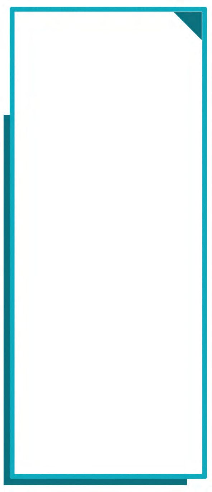<figcaption>Figure fig_ch07_p133_02 (Page 133)</figcaption></figure>
  <figure class="diagram-card" id="fig_ch07_p133_03"><figcaption>Figure fig_ch07_p133_03 (Page 133)</figcaption></figure>
  <div class="page-content">
    <p>Negative Numbers</p>
    <p>For a point moving along a line with steady
speed in either direction, if we know its
speed and the time of travel, then we can
calculate the distance travelled. For example
if the speed is 10 metres per second (written
10 m/sec), then in 4 seconds it travels a distance
of 10  4 = 40 metres. But to fix its final
position, we must know the direction of travel.
As before, let us imagine a point travelling along
a straight line, moving either left or right with
respect to a fixed point O. As usual, we mark
positions on the line using distances from the
point O, positive numbers for positions to the
right of O and negative numbers for positions
to the left of O. Let&#x27;s suppose that the point
starts from O. Also, fix the unit of distances as
metre, unit of time as second and the unit of
speed as metre per second.</p>
    <p>Speed math
The fastest time in 100 metre sprint
is currently 9.58 seconds, set by
Usain Bolt of Jamaica in 2009 at Berlin.</p>
    <p>He didn&#x27;t run at a steady speed throughout
this time. The time he took to cover every
20 metres has been recorded:
Distance
Matres</p>
    <p>Time
Seconds</p>
    <p>0 20</p>
    <p>2.89</p>
    <p>20 40</p>
    <p>1.75</p>
    <p>40 60
60 80</p>
    <p>1.67</p>
    <p>80 100</p>
    <p>1.66</p>
    <p>If the point starts from O and travels to the right
at the speed of 10 m/s for 3 seconds, it would
reach the position 3  10 = 30.
If the direction of travel is to the left ? The
position is (3 ×10) = 30</p>
    <p>1.61</p>
    <p>So to calculate the position, if the travel is to
the right, we multiply the speed by time; if it is to the left we take the negative of this
product.
To state this in algebra, we denote the time by t, speed by v, and position by s. Then
s = tv if moving to the right
s = (tv) if moving to the left
To combine them into a single equation, we can try denoting speeds to the right by
positive numbers and that to the left by negative numbers.</p>
    <p>133</p>
  </div>
</section><section class="page-section" id="page-134">
  <div class="page-header"><span class="page-number">Page 134</span></div>
  <figure class="diagram-card" id="fig_ch07_p134_01"><figcaption>Figure fig_ch07_p134_01 (Page 134)</figcaption></figure>
  <div class="page-content">
    <p>Standard - IX Mathematics</p>
    <p>For example if the travel is to the right at 10 m/s, we take v = 10 and if it is to the left,
v = 10.
But then, there&#x27;s a problem: for a point starting from O and moving to the left at 10 m/s
for 3 seconds, if we want to calculate the position as a product, we will have to define
what we mean by 3 × (10).
We can think about this like this: for positive numbers, multiplication is computing so
many times something. For example,
3 × 10 = 3 times 10 = 10 + 10 + 10 = 30
How about defining 3 × (10) also like this?
3 × (10) = (10) + (10) + (−10) = −30
This definition of multiplying a negative number by a natural number we can extend to
all numbers.
So denoting the time by t, the speed by v and the position by s, we can say the relation
between them by the general equation, s = tv
Now let&#x27;s change the context a bit. Suppose a point is moving along the line at a steady
speed of 10 m/s and we start observing it only from the time it reaches O.
If the journey is towards from left to right, at 2 seconds after we start watching, its
position would be at 20.
What about the position at 2 seconds before we start watching?
It needs 2 more seconds to reach O. So it&#x27;s at a distance of 20 metres to the left of O, that
is at the position 20.
And if the journey is from right to left?
Let&#x27;s calculate the positions for different directions of travel at times before and after we
start observing, and make a table. To write down the positions using an actual picture or
mental image, we first write speed and positions using the qualifications right and left:</p>
    <p>134</p>
  </div>
</section><section class="page-section" id="page-135">
  <div class="page-header"><span class="page-number">Page 135</span></div>
  <figure class="diagram-card" id="fig_ch07_p135_01"><figcaption>Figure fig_ch07_p135_01 (Page 135)</figcaption></figure>
  <div class="page-content">
    <p>Negative Numbers</p>
    <p>Time
2 seconds after</p>
    <p>Speed
10 right</p>
    <p>Position
20 right</p>
    <p>2 seconds after</p>
    <p>10 left</p>
    <p>20 left</p>
    <p>2 seconds before</p>
    <p>10 right</p>
    <p>20 left</p>
    <p>2 seconds before</p>
    <p>10 left</p>
    <p>20 right</p>
    <p>Now let&#x27;s write position and speed as only numbers, positive or negative:
Time</p>
    <p>Speed</p>
    <p>Position</p>
    <p>2 seconds after</p>
    <p>10</p>
    <p>20</p>
    <p>2 seconds after</p>
    <p>10</p>
    <p>20</p>
    <p>2 seconds before</p>
    <p>10</p>
    <p>20</p>
    <p>2 seconds before</p>
    <p>10</p>
    <p>20</p>
    <p>To remove the qualifications before and after for time, we can write time after observation
as positive and times before observation as negative:
Time</p>
    <p>Speed</p>
    <p>Position</p>
    <p>2</p>
    <p>10</p>
    <p>20</p>
    <p>2</p>
    <p>10</p>
    <p>20</p>
    <p>2</p>
    <p>10</p>
    <p>20</p>
    <p>2</p>
    <p>10</p>
    <p>20</p>
    <p>In the first row of this table, the last number is got by multiplying the second number by
the first.
In the second row also, according our new definition of multiplication, we have
2 (10) = 20. What about the third line ?
What is the meaning of (2)  10 ?
We think like this. For positive numbers, changing the order of numbers in a multiplication
doesn&#x27;t change the product. For example
53=35</p>
    <p>1 #1 =1 #1
2 4 4 2</p>
    <p>2# 3= 3# 2</p>
    <p>135</p>
  </div>
</section><section class="page-section" id="page-136">
  <div class="page-header"><span class="page-number">Page 136</span></div>
  <figure class="diagram-card" id="fig_ch07_p136_01"><figcaption>Figure fig_ch07_p136_01 (Page 136)</figcaption></figure>
  <div class="page-content">
    <p>Standard - IX Mathematics</p>
    <p>(2) 10= 10  (−2)</p>
    <p>So here also, we define
And we&#x27;ve already seen that</p>
    <p>10  (−2) = −20
Thus if we define
(−2) 10 = 10 (2) = −20
Then the same relation, as in the first two rows, holds for the numbers in the third row
of the table also.
What about the last row?
How do define the meaning of (−2) −10) ?
We have to define this as 20, if we want the relation between the numbers in each row.
We can give a purely mathematical justification for such a definition like this.
To multiply the sum of two positive numbers by a positive number, we need only multiply
each and add. For example,
(5 + 2)  10 = (5  10) + (2  10)
In algebraic language,
(x + y)z = xz + yz for any positive numbers x, y, z
Let&#x27;s see what we&#x27;ll have to do to make this true for negative numbers also. For example,
let&#x27;s take x = 5, y = −2, z = −10 and calculate the two sides of the above equation
(x + y)z = xz + yz separately.
(x + y)z = (5+ (−2)) × (−10) = 3 × (−10) = −30
xz + yz = (5  (10)) + ((2)  (10)) = 50 + ((2)  (10))
If this products are to be equal, what should be (2) × (10)?
The first product is 30 and the second product is some number added to 50</p>
    <p>136</p>
  </div>
</section><section class="page-section" id="page-137">
  <div class="page-header"><span class="page-number">Page 137</span></div>
  <figure class="diagram-card" id="fig_ch07_p137_01"><figcaption>Figure fig_ch07_p137_01 (Page 137)</figcaption></figure>
  <figure class="diagram-card" id="fig_ch07_p137_02"><figcaption>Figure fig_ch07_p137_02 (Page 137)</figcaption></figure>
  <figure class="diagram-card" id="fig_ch07_p137_03"><figcaption>Figure fig_ch07_p137_03 (Page 137)</figcaption></figure>
  <div class="page-content">
    <p>Negative Numbers</p>
    <p>What is the number to be added to 50 to make it 30 ?
So, if we want the equation (x + y)z = xz + yz to be true for x = 5, y = 2, z = 10 we&#x27;ll
have to define (2)  (10) as 20.
If we define like this, we get the last number in each row of our table as the product of
the first two:
Time
Position
Speed
t
tv
v
2
10
20 = 2  10
2</p>
    <p>10</p>
    <p>20 = 2 (10)</p>
    <p>2</p>
    <p>10</p>
    <p>20 = (−2)  10</p>
    <p>2</p>
    <p>10</p>
    <p>20 = (−2) (10)</p>
    <p>Thus we can give the relation between the
time t, the speed v and the positions s can be
given by the single equation
s = tv
The new definitions used to get this are these
For any two positive numbers x and y
(x)y = x(y) = (xy)
(x) (y) = xy</p>
    <p>(1) Take different numbers, positive
and negative, as x, y, z and
calculate (x + y) z and x z + yz.
Check if the equation
(x + y) z = x z + yz holds in all
cases.
(2) Prove that the equation
(x+y) (u+v)= xu + xv + yu  yv
holds if x, y, u, v are replaced by
x, y, u, v.</p>
    <p>Oscillation
What is (1) × (1)? By the definition of
multiplying negative numbers, it is 1. What
about (1) × (1) × (1) ?
The product of the first two 1&#x27;s is 1. When
this is multiplied by 1 again, we get 1.
We can write these as
(1)2 = 1
(1)3 = 1</p>
    <p>Compute some more powers of 1. Can
you find a general pattern?
If the exponent is an odd number, then the
power is 1; if exponent is even, the power
is 1.
The algebraic form of this is
(−1)2n − 1 = −1
(−1)2n = 1</p>
    <p>for any natural number n.
Now take different natural numbers as n
and compute 1+ (−1)n.
What about 12 ^1  ] 1gnh ?</p>
    <p>137</p>
  </div>
</section><section class="page-section" id="page-138">
  <div class="page-header"><span class="page-number">Page 138</span></div>
  <figure class="diagram-card" id="fig_ch07_p138_01"><figcaption>Figure fig_ch07_p138_01 (Page 138)</figcaption></figure>
  <div class="page-content">
    <p>Standard - IX Mathematics</p>
    <p>(3) In each of the equations below, find y when x is the given number:
(i)</p>
    <p>y = x2 , x = 1</p>
    <p>(ii)</p>
    <p>(iii) y = x2 + 3x + 2, x = 2</p>
    <p>y = x2 + 3x + 2, x = 1</p>
    <p>(iv) y = (x + 1) (x + 2), x = 1</p>
    <p>(v) y = (x + 1) (x +2), x = 2
(4) In the equation y = x2 + 4x + 4, take different numbers, positive and negative, as
x and calculate y. Why is y positive or zero in all cases?
(5) Natural numbers, their negatives and zero can be together called integers.
(i) How many pairs of integers (x, y) can you find, satisfying the equation
x2 + y2 = 25
(ii) How many pairs of integers (x, y) can you find satisfying x2  y2 = 25?
(6) 1  2  3  4  5 = 120, what is (1)  (2)  (3)  (4)  (5) ?
(7) What is (1 × 2 × 3 × 4 × 5) + [(−1) × (−2) × (−3) × (−4) × (−5)] ?</p>
    <p>Negative division
For positive numbers, division is defined in terms of multiplication. For example, the
meaning of 6  2 is finding that number which on multiplication by 2 gives 6,
Since 2  3 = 6, write
6 2 = 3
Since 3  2 = 6 also, we have
6÷3=2
According to this, what is (6) 2 ?
Since 2  (3) = 6, we have
6 ÷ 2 = (3)</p>
    <p>138</p>
  </div>
</section><section class="page-section" id="page-139">
  <div class="page-header"><span class="page-number">Page 139</span></div>
  <figure class="diagram-card" id="fig_ch07_p139_01">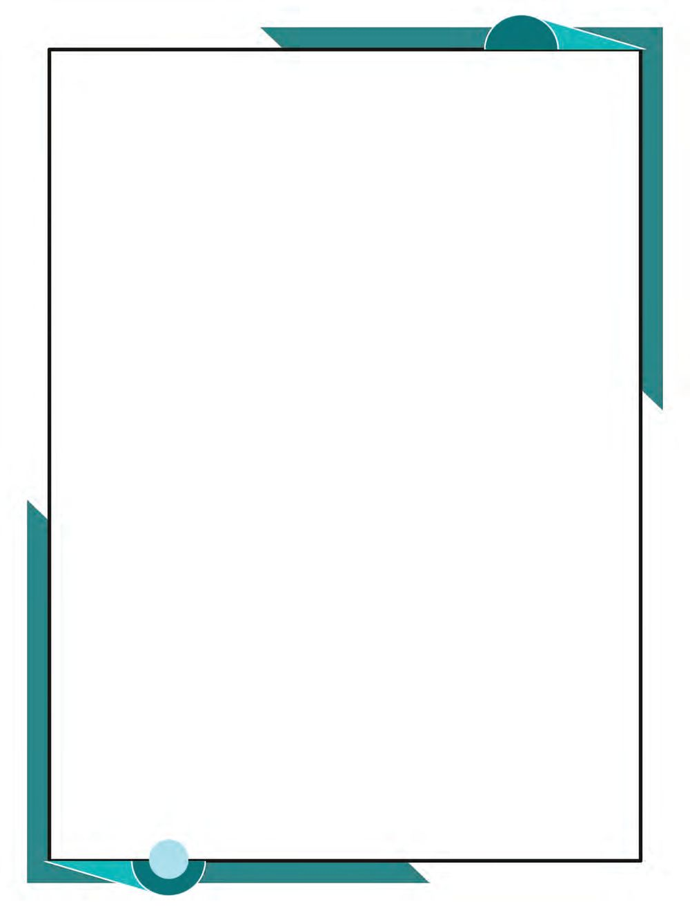<figcaption>Figure fig_ch07_p139_01 (Page 139)</figcaption></figure>
  <figure class="diagram-card" id="fig_ch07_p139_02"><figcaption>Figure fig_ch07_p139_02 (Page 139)</figcaption></figure>
  <figure class="diagram-card" id="fig_ch07_p139_03"><figcaption>Figure fig_ch07_p139_03 (Page 139)</figcaption></figure>
  <div class="page-content">
    <p>Negative Numbers</p>
    <p>Also, since (3) × 2 = 6, we have
6 ÷ (3) = 2
Similarly, since (3)  (4) = 12, we have
12 ÷ (3) = 4
and
12 ÷ (4) = 3
We can calculate other divisions using negative
numbers in the same way.
In algebra, we usually write x  y as xy . So,
the general rules of negative division can be
stated like this:
For any positive numbers x and y
x
y</p>
    <p>x c x m
y
y
x x
y y</p>
    <p>Unification of equations
An object thrown upwards reaches a
certain height and starts falling down. This
can be mathematically described.
If thrown straight up, the speed decreases
at the rate of 9.8 m/s. Continuously
decreasing thus, when the speed becomes
zero, it starts falling down. Throughout the
fall, the speed increases at the rate of 9.8
m/s.
Suppose it is thrown up with a speed of
49 m/s. At 5 seconds, the speed becomes
49  (5 × 9.8) = 0. So after 5 seconds, the
journey is downwards with increasing
speed. So, at 7 seconds, the speed is
0 + (2 × 9.8) = 19.6 m/s
So we need two equations to describe this
journey algebraically:
v = 49  9.8t, if t &lt; 5
v = 9.8 t  49, if t &gt; 5</p>
    <p>If we denote the speed upwards by positive
numbers and the speed downwards by
negative numbers, we can describe the
motion using a single equation:
v = 49 − 9.8t</p>
    <p>(1)</p>
    <p>Calculate y when x is taken as 2,  2, 12 ,  12 in the equation
y</p>
    <p>(2)</p>
    <p>1
x</p>
    <p>Calculate y when x = 2 and x  12 in the equation
y</p>
    <p>1  1
x 1 x 1</p>
    <p>139</p>
  </div>
</section><section class="page-section" id="page-140">
  <div class="page-header"><span class="page-number">Page 140</span></div>
  <figure class="diagram-card" id="fig_ch07_p140_01"><figcaption>Figure fig_ch07_p140_01 (Page 140)</figcaption></figure>
  <div class="page-content">
    <p>Standard - IX Mathematics</p>
    <p>(3)</p>
    <p>Calculate z when x and y are taken as the numbers below in the equation
z</p>
    <p>x  y
y x</p>
    <p>(i) x = 10, y = −5</p>
    <p>140</p>
    <p>(ii) x = 10, y = 5</p>
    <p>(iii) x = 10, y = −5</p>
  </div>
</section><section class="page-section" id="page-141">
  <div class="page-header"><span class="page-number">Page 141</span></div>
  <div class="page-content">
    <p>Notes</p>
  </div>
</section><section class="page-section" id="page-142">
  <div class="page-header"><span class="page-number">Page 142</span></div>
  <div class="page-content">
    <p>Notes</p>
  </div>
</section><section class="page-section" id="page-143">
  <div class="page-header"><span class="page-number">Page 143</span></div>
  <figure class="diagram-card" id="fig_ch07_p143_01"><figcaption>Figure fig_ch07_p143_01 (Page 143)</figcaption></figure>
</section><section class="page-section" id="page-144">
  <div class="page-header"><span class="page-number">Page 144</span></div>
  <figure class="diagram-card" id="fig_ch07_p144_01"><figcaption>Figure fig_ch07_p144_01 (Page 144)</figcaption></figure>
</section>
    </main>
    <footer>
      <div class="nav-bar"><a href="part_1_99_118.html">← 99-118</a><a href="index.html">☰ Index</a><span class="nav-bar disabled"></span></div>
      <p style="text-align: center; font-size: 0.85rem; color: var(--text-muted); margin-top: 2rem;">
        Kerala SCERT Class 9 Mathematics (English Medium) - Extracted Study Text
      </p>
    </footer>
  </div>
</body>
</html>
